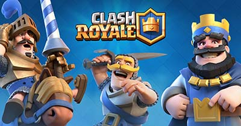

Mi vida actualmente se basa en dedicarme a estudiar y en mis tiempos libres los dedico a hacer las cosas que me gustan e intentar no echar a perder todo lo que e invertido en mi carrera.
mi forma de vestir creo que es neutral unos jeans con cualquier camisa de las que tengo sin usar exclusivamente de una marca o color mientras me quede bien me lo pongo, usos tennis todo el tiempo solo uso zapatos cuando es estrictamente necesario para mi el usar zapatos me es algo incomodo y los trato de evitar lo mas que puedo.En cuanto a accesorios tampoco me gusta usar nada de ese tipo de cosas como son los collares, pulseras, anillos ni nada de eso y creo que la única vez que valla a usar algo de eso seria un anillo si me llego a casar por la iglesia.En peinado solo uso gel cuando tengo el cabello corto una vez que considero que esta largo solo intento peinarlo algo para que no se vea desparramado.
Soy un creyente de que dios existe y que existe algo mejor despues de la muerte tal vez no mi visita a la iglesia no es muy frecuente tengo mas de 2 meses desde que fui pero eso no me evita el agradecer a dios por darme un día mas de vida.
Mi comida favorita actualmente son los frijoles acompañados con arroz, una coca y tortillas de harina talvez pueda sonar un poco a mentira pero no es 100% real cada vez que puedo le pido a mi mama que haga de comer eso aunque a ella no le gusta mucho el hacerlo pero cuando llega a hacerlo como hasta que ya no pueda mas.

Mis adicciones en la actualidad son un juego para celular llamado Clash royale el cual recomiendo mucho aunque con la advertencia de que es muy adictivo, la serie de televisión The walking dead aunque a mucha gente le parezca tonta a mi me emociona mucho y disfruto el ver cada capitulo aunque mi mamá me diga que deje de ver esos monos feos y la ultima adiccion que tengo es una actriz llamada Elizabeth Olsen que es conocida por interpretar a la bruja escarlata en las películas de supeheroes de marvel y santo dios que bella es definitivamente puedo decir que es mi amor platónico sin miedo a lo que me digan.
 
La película que mas me gustan y que nunca me canso de ver actualmente son las de volver al futuro parte ll me encanta el como juegan con el salto de tiempo en esta película y el como hacen que el personaje principal vuelva a viajar en el tiempo a la época en la que estuvo en la primera película osea el como esta la misma persona en una fecha en la que ni siquiera existe y todo lo que tiene que hacer para corregir el futuro.
Actualmente creo que estoy viviendo en una etapa en donde voy a dejar de ser un adolescente para convertirme en un adulto por lo que tengo que empezar a pensar de una forma mas madura y empezar a tomarme las cosas en serio y no solo tomarlas a juego o que no va a pasar nada si no hago las cosas porque parte de la vida adulta es tomarse enserio lo que haces para poder ser tomado en cuenta en el ámbito empresarial.
Regresar{kind=link}
{kind=link}
{kind=link}